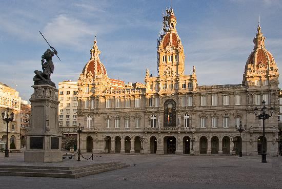
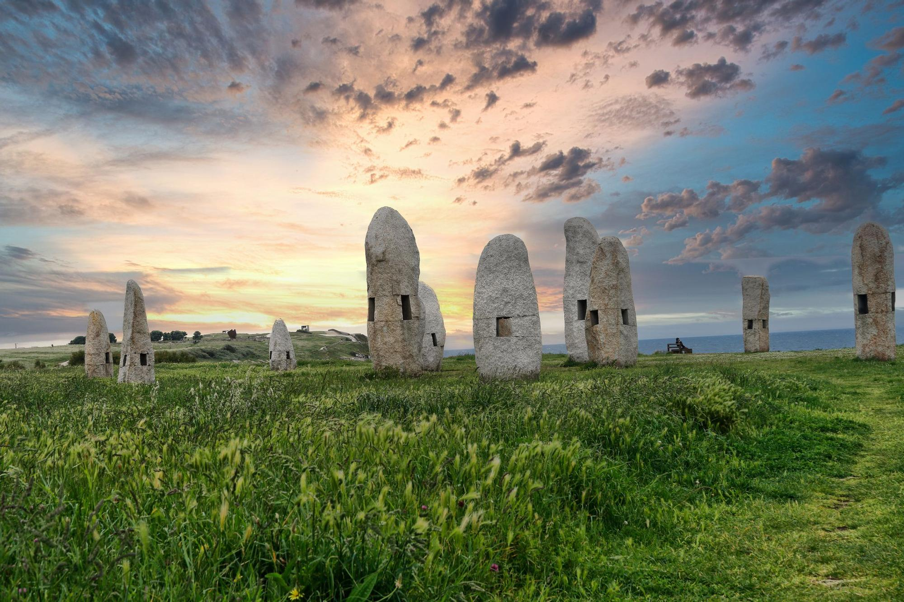

MONUMENTOS

La Torre de Hércules es el faro romano más antiguo del mundo aún en funcionamiento y uno de los grandes símbolos de A Coruña. Construida en el siglo I d. C., ofrece unas vistas espectaculares del Atlántico. Declarada Patrimonio de la Humanidad por la UNESCO

Situado en una pequeña isla unida hoy al paseo marítimo, el Castillo de San Antón fue una fortaleza defensiva del siglo XVI que protegía la ciudad de los ataques por mar. Actualmente alberga el Museo Arqueológico e Histórico de A Coruña.

María Pita es la heroína coruñesa que en 1589 lideró la defensa de la ciudad frente al ataque de la Armada inglesa. Su valentía la convirtió en un símbolo de coraje y orgullo local. La Plaza de María Pita, dedicada a su memoria, es hoy el corazón de la ciudad y uno de los lugares más emblemáticos de A Coruña, rodeada de galerías, terrazas y el majestuoso Palacio Municipal.

Menhires por la paz. Estas enormes piedras verticales simbolizan la unidad, la memoria y la convivencia entre los pueblos. Además, forman un paisaje único frente al océano, ideal para pasear y contemplar el atardecer.